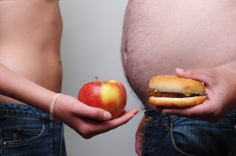
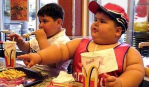
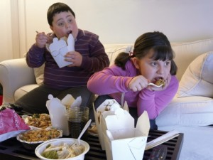
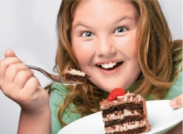

Obezitatea este definită ca fiind depășirea greutății ideale cu 20% sau mai mult. Cei cu un exces ponderal cuprins între 10-19% față de greutatea ideală se numesc supraponderali. De fapt, din punct de vedere timthumbfiziologic, obezitatea nu înseamnă exces de greutate corporală, ci un exces de țesut adipos.
Numărul persoanelor supraponderale de pe glob depășește un miliard, la care se adaugă peste 300 de milioane de persoane cu obezitate. În Statele Unite peste 66% din populație este supraponderală și obeză, iar în România peste 50%. Unul din patru români este obez.
Excesul ponderal scurtează viața. Studii recente arată că până și un exces ponderal redus, de 2,5- kg, crește cifra mortalității. Se estimează că fiecare kilogram de exces ponderal șterge două luni din speranța de viață, treizeci de kilograme în plus ne privează de aproximativ cinci ani de viață, în cazul în care nu ne ucide mult mai repede prin complicațiile ce le antrenează.
Organizația Mondială a Sănătății a numit obezitatea „ucigașul cel mai de temut al secolului XXI. Excesul ponderal pune bazele tuturor bolilor degenerative, cu excepția osteoporozei. Un obez este expus unui risc de trei ori mai mare de a dezvolta o boală de inimă, de patru ori mai mare de a suferi de hipertensiune, de cinci ori mai mare de a se îmbolnăvi de diabet și de a avea niveluri crescute ale colesterolului sanguin și de șase ori mai mare de a contracta boli ale vezicii biliare. De asemenea, obezii se îmbolnăvesc mai des de cancer de colon, rect, prostată, sân, col uterin, uter și ovar și suferă mai des de durere lombară joasă și osteoartrită.
Diet– Iată o listă mai amplă (dar incompletă) cu bolile pe care le cauzează, favorizează sau complică obezitatea: diabetul, hipertensiunea arterială, accidentele vasculare cerebrale, hiperlipoproteinemia, hiperuricemia, afecțiunile biliare, bolile canceroase, artropatiile degenerative, trombozele și stazele venoase, embolia pulmonară, afecțiunile cutanate, cum sunt intertrigo și hirsutismul, fertilitatea redusă, complicațiile la naștere, apneea de somn, problemele psihosociale, riscul crescut la intervenții chirurgicale și mobilitatea redusă. Numeroase voci cer revizuirea definiției obezității, considerând criteriile utilizate în prezent ca nefiind satisfăcătoare, deoarece, pe lângă obezitatea determinată prin cântar și centimetru, există o obezitate metabolică, deși dacă greutatea este considerată normală. Cea mai importantă caracteristică a acestei obezități metabolice este rezistența la insulină. Creșteri mici ale volumului de țesut adipos – acelea ce survin o dată cu înaintarea în vârstă – pot determina creșterea trigliceridelor în sânge, apariția diabetului și a altor stări patologice, tulburarea de bază fiind rezistența la insulină. Prin rezistența la insulină înțelegem o stare a unei celule, a unui țesut, sistem său organism în care, pentru a obține un răspuns insulinic normal, este nevoie de cantități mai mari de insulină.
Mulți autori cer ca greutatea considerată sănătoasă să fie cea care previne cel mai bine boala coronariană și afirmă că ea n-ar trebui să depășească indicele de masă corporală de 22,6 la bărbați și 21,1 la femei. Aceasta înseamnă că un bărbat cu înălțimea de 1,75 m, în niciun caz n-ar trebui să aibă o greutate mai mare de 66 kg, de preferat cu câteva kg mai puțin, iar o femeie de 1,60 m să aibă mai puțin de 55 kg, de preferat 50. Alții cred că riscurile diferitelor boli cresc începând cu indicele de greutate corporală 20, ceea ce înseamnă că un bărbat de 1,80 m nu trebuie să cântărească mai mult de 67 kg.
Înmulțirea produselor bogate în zahăr și grăsimi și a alimentelor rafinate, de la coca-cola și tot ce oferă restaurantele fast food, de tipul McDonald’s este una din cauzele dezechilibrelor nutriționale, ale obezității, ale bolilor de inimă și a cancerului. Revoluționați-vă obiceiurile culinare. Cu cât veți mânca mai puțină carne, lapte, ouă și brânzeturi, cu atât veți da jos mai repede kilogramele în plus. Cea mai bună dietă de slăbit este o dietă vegetariană formată numai din fructe, verdețuri, cereale integrale, nuci și semințe. Chiar și derivatele lactate degresate determină creșterea greutății și masei corporale la animalele tinere, datorită unui factor de creștere din proteina laptelui. Folosirea alimentelor de origine animală, alături de o dietă bogată în calorii determină maturizarea precoce a copiilor și apariția timpurie a pubertății, pregătindu-i pentru bolile degenerative.
S-a observat că vegetarienii au o rată a metabolismului ușor mai crescută în timpul perioadei de odihnă, adică ei ard ceva mai mult din caloriile ingerate pentru a produce căldură în organism și nu le depun sub formă de grăsimi de depozit.
Carnea este bogată în calorii și face ca pierderea greutății să fie dificil de obținut. Pe de altă parte, toate fructele, zarzavaturile și cerealele (tară adausuri de grăsimi) sunt mult mai scăzute în calorii, astfel facilitând un excelent program de scădere în greutate.
Până nu demult, se credea că în organismul uman toate grăsimile alimentare se oxidează, adică se utilizează la fel. Azi se știe că diferitele tipuri de grăsimi determină rate diferite de creștere în greutate. Astfel, grăsimile de origine vegetală se oxidează mai repede decât grăsimile din produsele lactate și din carne. Spus altfel, acizii grași nesaturați sunt metabolizați mai repede decât acizii grași saturați cu același număr de atomi de carbon (L.Piers și colaboratorii – Internațional Journal of Obesity 2002; 26: 814-821). De asemenea, acizii grași saturați înrăutățesc rezistența la insulină, o realitate de care trebuie să țină seama persoanele obeze cu diabet.
Eliminați complet toate grăsimile libere (unt, margarină, maioneză, alimente prăjite, grăsimi prăjite, unt de arahide). N-o să pierdeți niciun element nutritiv de neînlocuit, nivelul de echilibru pentru greutatea dumneavoastră corporală va coborî, iar tensiunea dumneavoastră arterială va avea numai de câștigat de pe urma unei diete sărace în grăsimi. Veți putea totuși folosi câteva nuci (mai bune sunt migdalele) și semințe.
Cu cât varietatea de alimente servite la o masă este mai redusă, cu atât nivelul de echilibra pentru greutatea corporală coboară. Cu alte cuvinte, greutatea corporală va crește mai mult după un prânz de 600 de calorii provenite din zece preparate culinare diferite, gătite după rețete complexe, decât după un prânz de 600 de calorii provenite din două sau trei feluri de mâncare consumate cu pâine.
Nu uitați că aceeași cantitate de alimente consumată dimineața nu crește greutatea ca atunci când este consumată seara, deoarece în timpul zilei predomină activitatea sistemului nervos simpatic, care favorizează arderile, catabolismul. Consumul de energie, pe când noaptea predomină activitatea sistemului parasimpatic, care favorizează anabolismul. Clădirea organismului sau depunerea de energie. Încercați să nu mai mâncați nimic după ora trei a după-amiezii. Excepție de la această regulă fac ceaiurile din plante medicinale, care pot fi consumate fără restricție și după ora 1500. Acest program de mese aduce rezultate excepționale. Deci, cine dorește să slăbească nu va renunța la masa de dimineață, ci la cea de seara. obezitatea-la-copii– Gustările între mese aduc mari dezavantaje procesului de aducere a organismului la greutatea optimă. De cele mai multe ori, aceste gustări sunt și bogate în calorii, iar pe deasupra nu oferă sistemului digestiv posibilitatea repausului.
Hotărâți-vă să nu consumați niciun aliment între mese.
Nu consumați băuturi răcoritoare. O băutură răcoritoare conține între 120-180 de calorii provenite din zahăr, însă ”“ nici un fel de alte substanțe nutritive, fapt ce dezechilibrează balanța nutritivă. Pentru copii, băuturile dulci sunt o caastrofa. Consumul zilnic al unui pahar de băutură cu zahăr la copii între 7 și 11 ani crește indicele de masă corporală cu 0,24 unități.
Este foarte important să se înțeleagă că dietele de slăbit topesc mușchii, nu grăsimile, și de aceea trupul devine inestetic. Numai mișcarea topește grăsimile și întărește mușchii, formând o siluetă armonioasă.
Exercițiul cel mai bun și cel mai sigur este mersul pe jos. Persoanele antrenate pot opta, desigur, pentru exerciții mai solicitante. Începeți treptat cu ceea ce sunteți în stare să faceți. Nu este chiar atât de important cât de repede mergeți. Ceea ce contează este distanța totală parcursă și durata activității. Unii trebuie să înceapă cu numai cinci minute o dată, de câteva ori pe zi. Faceți mișcare după fiecare masă. Ieșiți în aer liber și mișcați-vă aproximativ 25 de minute. Mișcarea nu trebuie să fie foarte solicitantă, dar este bine să aibă o intensitate moderată.
Expunerea repetată, zilnică, la soare, stimulează metabolismul și reduce apetitul.
Stresul (agitația, nervozitatea, îngrijorarea etc.) contribuie la dezechilibrarea sistemului endocrin și face mai dificilă căderea în greutate. Pe deasupra, stresul contribuie la apariția unei multitudini de boli și dezechilibre. Învățați să vă încredeți în Dumnezeu și dobândiți liniștea și pacea sufletului.
Ceea ce este trist este că majoritatea oamenilor nu înțeleg că eforturile lor de a slăbi sunt sortite eșecului, afară de cazul în care sunt dispuși să facă modificări de durată în modul lor de viață și să aleagă sistematic numai alimente sănătoase. Până la 95% dintre cei ce au slăbit ținând o cură de slăbire își recapătă kilogramele pierdute în maximum un an de zile, de obicei cu un supliment deloc neglijabil.
Obezitatea este favorizată de anumite medicamente: corticosteroizii, antidepresivele triciclice și heterociclice, insulina și majoritatea medicamentelor antidiabetice etc.
Nu uitați că uleiul este un aliment foarte concentrat. Folosiți-l în cantități foarte reduse. Încercați chiar să renunțați la uleiul adăugat în salate sau picurați extrem de puțin ulei de măsline extravirgin.
Fibrele alimentare se găsesc numai în alimente de origine vegetală. Acest material, care conferă rigiditate pereților celulari ai plantelor se prezintă în mii de variante chimice. Noi digerăm extrem de puțin din fibre, aproape deloc. Cu toate acestea, fibrele, neavând calorii deloc sau doar foarte puține, ajută printre altele, la diluarea densității calorice a alimentației noastre, creează sațietate și curmă pofta de mâncare. Astfel, ele ne satisfac foamea și reduc la minimum supraconsumul de calorii.
Renunțați la pâinea albă și produsele de patiserii preparate din faină albă. Sunt nesănătoase și îngrașă. Preparați din făină integrală pâinici bine coapte. Sunt foarte hrănitoare, nutritive și sățioase. Veți mânca puțin și vă veți sătura.
Date recente privind efectele biologice ale alimentelor fast-food, adică de tip McDonald’s, sugerează faptul că hrana excesiv de bogată în grăsimi și zahăr poate produce modificări în creier, care fac dificilă renunțarea la ele. Cercetătorii cred că aceste alimente pot declanșa modificări asemănătoare celor ce se întâlnesc în dependența de cafea, tutun și droguri. Deosebirea între o masă la McDonald’s și una pregătită în casă constă în proporția de grăsimi și zahăr. O singură masă la un restaurat fast-food cu hamburger, cartofi prăjiți, o băutură dulce și un desert – furnizează cantitatea de grăsimi care ar fi suficientă pentru 3-4 zile și energia aproape pentru o zi întreagă. Pe lângă caloriile multe mai este calitatea, sub orice critică, a uleiurilor care stau pe foc ziua și noaptea.
Un rol nefast în apariția obezității la copii îl are și hrănirea artificială, la vârsta când copiii ar trebui să fie alimentați ia sân. 75% dintre copiii mici din Franța consumă mai multe proteine și grăsimi decât ar trebui, pentru că nu sunt hrăniți la sân. Academia Americană de Pediatrie recomandă hrănirea la sân timp de cel puțin 12-13 luni. Doi din trei americani adulți sunt supraponderali, iar o treime din populația adultă a Americii este obeză. Nu doar că aceste cifre sunt foarte mari, dar ritmul în care cresc este alarmant. Aproximativ 15% din copiii Americii sunt supraponderali. Un alt procent de 15% prezintă riscul de a deveni supraponderali.
Din nefericire, din punct de vedere nutritiv, modul de pregătire a alimentelor din zilele noastre constituie o nenorocire. Dacă un cartof de 60 g oferă 50 de calorii, același cartof, servit sub formă de cartofi „pai”, furnizează 130 calorii. Consumați cât mai multe alimente crude sau foarte simplu gătite, adăugând puțină sare (sau deloc) și foarte puțin ulei de măsline.
Temelia atitudinii față de alimentație se așază în prima copilărie. Copiii se obișnuiesc cu anumite gusturi, pe care ajung să le iubească. Părinții trebuie să consume împreună cu copiii alimentele cele mai sănătoase, oferite în formele adecvate vârstei. În felul acesta, se vor forma gusturile și copiii vor îndrăgi alimentația vegetariană.
Tinerii supraponderali au adesea niveluri ridicate ale colesterolului, ceea ce poate constitui un semnal pentru multe boli fatale. Probabilitatea ca ei să prezinte intoleranță la glucoză este mai mare și prin urmare, sunt predispuși a face diabet. Diabetul de tip II, întâlnit înainte numai la adulți, crește în ritm vertiginos în rândul adolescenților. Copiii obezi prezintă o predispoziție de 9 ori mai mare de a face hipertensiune arterială. Apneea din timpul somnului care poate fi cauza unor probleme neuro-cognitive, se întâlnește la unul din 10 copii obezi. La copiii obezi se întâlnesc mult mai multe probleme legate de oase.
Într-o lucrare efectuată de cercetători din Elveția, Franța și Japonia, se arată că acidul linolic, din uleiul și margarina din floarea-soarelui, consumat în cantități relativ mari în timpul sarcinii sau în perioada de sugar și în prima copilărie, când țesutul adipos este într-o fază dinamică a dezvoltării lui, duce la obezitatea copiilor și a adolescenților (Massiera F. și colaboratorii – Journal of Lipid Research 2003; 44:271-279).
Nivelul ridicat de cortizol (hormonul principal fabricat de glandele suprarenale ca răspuns la stres) reduce sensibilitatea la insulina, iar reducerea acestei sensibilități a membranei celulare are legătură cu obezitatea, diabetul, sindromul metabolic X. Schimbați-vă stilul de viață, renunțând la încordarea și tensiunea continua și la emoțiile neaative care sunt ruinătoare pentru sănătatea dumneavoastră.
Puțini au auzit de sindromul X (sau sindromul metabolic), termen care se referă la un complex de simptome și afecțiuni între care diabetul, rezistența insulinică, obezitatea, hipertensiunea, colesterol ridicat, afecțiuni cardiace! Dacă vezi că începi să iei în greutate, nu ai energie și înregistrezi un nivel de colesterol și tensiune ridicate, și parcă nici mintea nu te mai ajută la fel ca mai înainte, atunci ești probabil candidat la sindromul X sau poate chiar suferi de el de mai multă vreme.
Soluția pentru a slăbi este alimentația în totalitate vegetariană, cu alimente integrale asociate cu o cantitate rezonabilă de mișcare fizică. Este o schimbare a stilului de viață pe termen lung și nu o încercare de cârpire rapidă printr-o ciudățenie. Această soluție oferă o pierdere în greutate constantă, concomitent cu reducerea riscului de a face boli cronice
Într-un anumit studiu, s-a cerut unor subiecți supraponderali cât de mult voiau alimente care erau în cea mai mare parte cu un conținut redus de grăsimi, alimente integrale de origine vegetală. În 3 săptămâni, aceste persoane au pierdut în medie 9 kg. La Centrul Pritikin, 4.500 de pacienți care au trecut printr-un program de 3 săptămâni au obținut rezultate similare. Hrănindu-și clienții cu o dietă în principal vegetariană și asociind-o cu mișcare fizică. Centrul a constatat că aceștia au pierdut 5,5 din greutate în decurs de 3 săptămâni. Sunt totuși și unii oameni care deși se alimentează vegetarian, totuși nu slăbesc. Sunt câteva motive principale pentru aceasta.
În primul rând și cel mai important, a slăbi folosind o dietă vegetariană nu se poate produce dacă respectiva persoană consuma prea mulți hidrați de carbon rafinați. Dulciurile, prăjiturile, plăcintele, produsele de patiserie și pastele făinoase nu pot duce la slăbire. Aceste alimente sunt foarte concentrate în zaharuri și amidonuri care se digeră repede, iar produsele de patiserie, prăjiturile, plăcintele au adesea și un conținut foarte mare de grăsimi. Alimentația optimă este alimentația în totalitate vegetariană, dar cu alimente integrale (nu rafinate).
Al doilea motiv pentru care nu are loc scăderea în greutate se datorează faptului că persoana respectivă nu face deloc mișcare fizică. Mișcarea fizică efectuată într-o proporție rezonabilă în mod regulat, poate duce la rezultate bune în al treilea rând, anumiți oameni au o predispoziție moștenită din familie de a avea corpuri supraponderale și aceasta face că provocarea lor să fie mai dificilă. Dacă te încadrezi aici, pot doar să-ți spun că trebuie să fii toarte viguros în ce privește alimentația și mișcarea fizică.
În cazul în care veți renunța la produsele de origine animală (carne, lapte, ouă) și veți consuma fructe, cereale integrale, legume, zarzavaturi, puține nuci și semințe, reducând drastic consumul de ulei, dacă veți adopta un program regulat de exerciții fizice (fără să devină o obsesie) și veți duce o viață echilibrată, cu siguranță greutatea corporală va scădea și veți deveni o persoană normoponderală. Nu este nevoie de tabele cu nutrienți, de calcularea caloriilor și de tot felul de cure de slăbire care sunt de cele mai multe ori dăunătoare, dezechilibrând organismul. Alegeți o soluție de termen lung, prin schimbări în stilul de viață.
Dacă doriți să scădeți mai repede în greutate, faceți o cură de sucuri de fructe și zarzavaturi pe o perioadă de 7-21 de zile. Se va consuma câte 250 ml de suc la două ore și jumătate. Într-o zi se vor însuma 1,5-2 litri de sucuri. Dacă nu puteți adopta un astfel de regim, cel puțin încercați să consumați cu predilecție crudități pe o perioadă mai lungă. Cu cât veți folosi mai multe alimente în stare crudă, cu atât mai bine va fi pentru greutatea dumneavoastră. Salatele de varză, morcovi, lăptucă, spanac, castraveți, roșii, ardei și consumul de fructe din belșug ar trebui să formeze meniul zilnic.
Se recomandă următoarele sucuri:
Frunze de țelină ½ pahar de două ori pe zi. Gustul este sărat și poate fi corectat adăugând puțin suc de morcov sau lămâie. Acest suc are un efect de inhibare a apetitului alimentar. Mai mult, efectele diuretice ale țelinei provoacă eliminarea apei din țesuturi, ducând la o scădere rapidă în greutate. La aceasta, se adaugă efectele de reglare a activității glandelor care produc în organism cortizonul (numit și hormonul de stres), care atunci când este produs în exces, dă carnației și pielii un aspect „pufos”, neplăcut.
Cartofi 1/2 pahar de suc, băut cu un sfert de oră înainte de fiecare masă. Sucul de cartofi are efecte foarte puternice de inhibare a apetitului alimentar. Mai mult, acest remediu stimulează din plin procesele de eliminare, ceea ce determină o accelerare a procesului de slăbire.
Orz verde – 1-2 pahare/zi (se poate folosi și pudra de orz verde). Are efecte depurative puternice, reglează funcționarea glandelor și ajută la eliminarea surplusului de greutate.
Pătrunjel (frunze)-1 pahar/zi. Este un bun reglator endocrin și un diuretic puternic.
Urzică – 1-2 pahare/zi. Sucul de urzică este un puternic purificator sanguin și depurativ, diuretic puternic, ajută la reglarea glandelor endocrine.
Păpădie – 1/2pahar/zi. Se poate lua în amestec cu sucul de pătrunjel sau urzică. Stimulează puternic activitatea hepatică și pancreatică, favorizează eliminarea de toxine, este un excelent diuretic.
Mere – 1 pahar/zi. Merele sunt bogate în potasiu, ajutând la eliminarea excesului de apă din țesuturi.
Grape-fruit – 1 pahar/zi. Stimulează diureza, purifică sângele, susține activitatea hepatică. Fructe de sezon, mai ales cele cu un conținut mare de apă (pepene verde, pere, cireșe, zmeură, căpșuni).
1 pahar = 250 ml
Folosiți sucurile pe care le puteți găsi în sezonul respectiv. Aveți o ofertă variată.
În fiecare dimineață, timp de 7 zile se face o clismă cu 1,5 litri infuzie călduță de mușețel. Ajută la curățirea colonului și dezintoxicarea generală a organismului. Alte recomandări dietetice:
Cura de struguri. Se începe cu o perioadă de acomodare de trei zile, în care se consumă progresiv: o jumătate de kilogram de struguri în prima zi, un kilogram în a doua zi, ajungându-se la 1,5 kilograme în cea de-a treia zi. După aceste zile în care ne obișnuim digestia și metabolismul cu strugurii, urmează 5-8 zile în care se consumă numai și numai struguri, ca atare sau sub formă de suc (must). Se consumă în fiecare zi minimum 1,5 kg de struguri ori 1,2 litri de suc proaspăt, cantitatea maximă fiind de 3-4 kg de struguri ori 2,4 litri de suc pe zi. După ultima zi de cură, ne reobișnuim gradat cu o alimentație diversificată. Cura cu struguri vizează explicit o scădere mai mult sau mai puțin bruscă în greutate. Pe lângă acest efect, se produce și o eliminare masivă a toxinelor din corp, care va favoriza apoi menținerea greutății în limitele pe care le dorim.
Cura de mere. Se recomandă consumul a 1-2 kg mere într-o zi, fară să se mai consume alte alimente.
Cireșele și vișinele au un efect depurativ puternic, sunt ușor laxative și au puține calorii. Puteți să le consumați din belșug.
Mai mult ca orice aliment, oferă o senzație de sațietate extrem de rapidă, datorită fibrelor alimentare din compoziția mămăliga sa, fiind utilă în tratarea obezității. Pe deasupra, mămăliga este un preparat sărac în calorii.
Se ia înainte de fiecare masă pulbere fină de târâte de grâu, câte o lingură. În stomac, fibrele conținute de coaja robului de grâu își vor mări foarte mult volumul, „tăind” pur și simplu foamea și dând senzația de sațietate. În plus, rie ajută procesele de eliminare, importante în tratamentul obezității.
Polenul de albine reglează tranzitul intestinal, favorizând eliminarea, stimulează metabolismul, ajutând la o mai rimă „ardere” a caloriilor. Se administrează 2 lingurițe de 2 ori pe zi, cu puțin timp înainte de masă. Cura durează 30 zile, apoi după o pauză, se poate relua.
Apă fierbinte cu lămâie – Atunci când simțiți că vă este foame, consumați câteva înghițituri (o jumătate de pahar) de apă fierbinte, în care stoarceți un sfert de lămâie. Aproape instantaneu, senzația de foame va dispărea și, chiar dacă ați vrea să mâncați, nu veți putea lua mai mult de câteva înghițituri. Motivul: sucurile gastrice sunt inactivate.
Două lingurițe de semințe de in se pun într-un pahar de apă și se lasă vreme de două ore la macerat, la temperatura camerei, după care nu se face filtrarea obișnuită, ci se bea ca atare. Înainte de fiecare masă se consumă un pahar de macerat călduț. Odată ajuns în stomac, se va produce o senzație de sațietate, care va reduce automat pofta de mâncare. Mai mult, el va ajuta la intensificarea proceselor de eliminare – element important în regimurile de slăbire.
Tinctura din fructe de soc combate drastic obezitatea. Pentru persoanele cu probleme mai serioase de greutate se recomandă o schemă de tratament complexă: în prima zi se ia o linguriță, la ora 18; a doua zi se iau două lingurițe Ia aceeași oră ș.a.m.d., până în ziua a șaptea, când se ajunge la 7 lingurițe luate odată. Se menține această doza vreme de 30 de zile. Dozele progresive se iau pentru a nu crea un șoc tranzitului intestinal, care va fi foarte mult accelerat, la fel ca și diureza și procesele de eliminare pe ansamblu. Tinctura din fructe de șoc deblochează tranzitul intestinal, fiind de un imens ajutor pe termen lung persoanelor constipate sau cu o eliminare leneșă. Apoi, mobilizează toxinele din organism și intensifică eliminarea lichidelor din corp prin diureză și prin transpirație.
Tinctură de Trei-frați-pătați. Se administrează 1 linguriță în jumătate de pahar de apă, de 4 ori pe zi, în cură de 30 zile. După o pauză de 14 zile, se mai face o cură. Această plantă are un efect diuretic foarte puternic, stimulând procesele de eliminare a toxinelor.
VaIeriană (rădăcină) – 2-3 capsule pe zi. Acizii valerianici conținuți în rădăcina acestei plante au un puternic efect de reducere a apetitului alimentar, mai ales când obezitatea și poftă de mâncare exagerată au la bază stresul cronic.Inconveniența acestui remediu este inducerea, în anumite cazuri, unei stări de moleșeală (Valeriana este o plantă cu efecte sedative).
Cura cu suc de lămâie: se consumă în prima zi sucul de la o lămâie. Se crește doza zilnic cu câte o lămâie până se ajunge la 7 lămâi pe zi. Din ziua a opta se scade doza cu câte 1 lămâie pe zi, până se ajunge la 1 lămâie zilnic. Se practică deci, 14 zile, iar după o pauză de două săptămâni se poate relua. Cura este foarte eficientă în obezitate cât și în alte boli. Sucul de lămâie se va consuma obligatoriu cu paiul. Această cură vă va ajuta să eliminați din greutate. În același timp, lămâia este un purificator sanguin și un „măturător” al tumorilor.